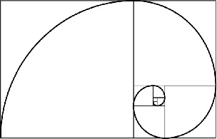
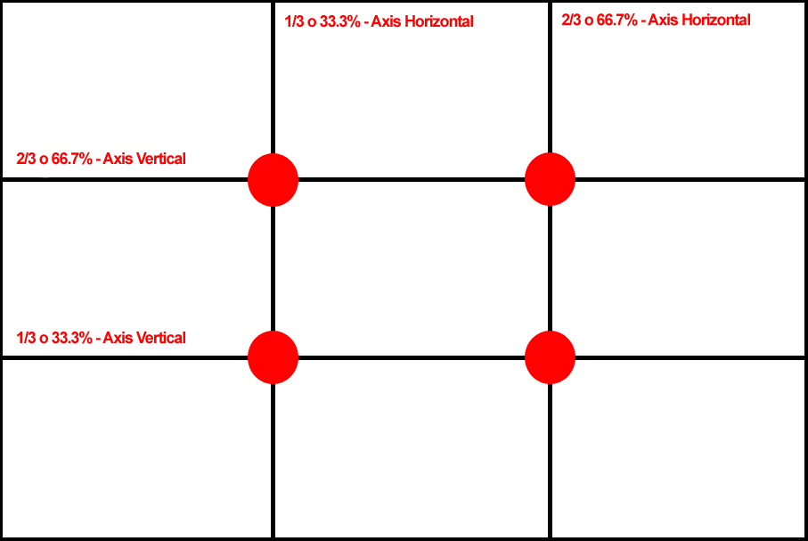
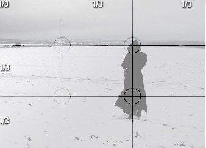
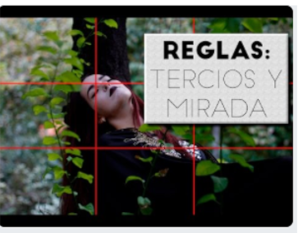

UNIDAD 1
FUNDAMENTOS DE DISEÑO GRAFICO
REGLA DE LOS 3 TERCIOS
¿Que es?
Es una de las reglas más básicas de composición fotográfica
ORIGEN
La regla de los tercios viene a ser la simplificación de las proporciones de la sección áurea,
basada en la armonía que rigen ciertos patrones de la naturaleza como hojas,
caracoles, u otras formas naturales.
La proporción áurea se basa en un número algebraico irracional resultado de vincular dos segmentos de una recta.
Su representación decimal es infinita y no tiene periodo,se le asocian propiedades incluso místicas,
ligadas a la perfección de sus proporciones.

"Es un medio simple de aproximación a la proporción áurea,
y que trata la distribución del espacio dentro de la imagen que genera una mayor
atracción respecto al centro de interés.
Con la regla de los tercios conseguirás dotar a tus fotografías de una sensación de profundidad
y lograrás que se aprecie un mayor equilibrio, guiando al ojo del espectador directamente
al punto de mayor interés."
Pasos basicos sobre la regla de los 3 tercios
Puntos de interseccion

Encontraras los puntos de interseccion claves en una fotografia
Divicion horizontal

Nos muestra el nombre de cada cuadro utilizado en los tercios
de igual manera nos muestra que se puede representar con fraccion o porcentaje
Aplicando la regla

Si eres demaciado observador podras ver que en esta fotografia
hemos aplicado la division de los tercio.
Para poder visualizar mejor las imagenes y saber mas iformacion de como tomar una
Click aqui
No en todas tus fotografías tendrá sentido aplicar la regla de los tercios, pero por norma general,
tus imágenes serán más atractivas debido a que:
Se crea una sensación de equilibrio.
La imagen adquiere más interés y complejidad que si colocáramos simplemente al sujeto u objeto en el centro del encuadre.
La foto tiene más fuerza y energía.
La imagen gana sensación de profundidad y deja de ser plana.
Consejos de primera mano sobre el uso de la regla de los tercios.
El uso repetitivo y práctico de la regla de los tercios es la mejor manera de entenderla y perfeccionar tus habilidades: en algún momento,
las líneas de la cuadrícula y sus puntos de intersección estarán dentro de tu cerebro. Hasta entonces,
aquí hay algunos consejos fotográficos de profesionales que pueden ayudarte a encauzar tu experimentación de forma correcta.
Practica con la cuadrícula de la regla de los tercios de tu cámara:
“Actívala para que puedas ver lo que estás haciendo mientras lo haces”,
sugiere Plicanic. “Con el tiempo, te da una idea”.
Haz una excursión de la regla de los tercios:
“Ve a un parque o donde sea e intenta hacer diez buenas fotos que sigan el modelo de la regla de los tercios”,
dice la fotógrafa de bodas Anna Goellner. “Cuantas más veces lo hagas, más se fija en tu cerebro”.
Presta atención a los ojos:
“Elige dónde quieres que esté tu punto de enfoque antes de hacer la foto.
Siempre me centro en los ojos”, dice la autora y fotógrafa de animales Carli Davidson.
LA COMPOSICION
En la fotografía es uno de los elementos intangibles más importantes,
porque de la armonía interna entre los elementos que forman la foto depende su atractivo.
Podemos decir que la composición es la disposición de elementos –sujetos y objetos– dentro del cuadro.
La manera en que selecciones estos objetos y los dispongas en el encuadre puede marcar la diferencia entre una gran foto y una que pase al olvido.
Recuerda que hacer una foto es elegir: lo que entra, lo que queda fuera, lo que está en foco, lo que ocupa el primer y el último plano.
No es captar la realidad tal cual es. Es plasmar tu visión de la realidad.
Los elementos que debes tener en mente a la hora de componer son:
Seleccionar:
qué elementos incluyes y cuáles dejas fuera de tu foto.
Disponer:
el lugar que ocupa cada elemento dentro de la imagen.
Enfatizar:
a cuáles de los elementos de la foto les otorgas el protagonismo.
Como habrás notado por tu experiencia, primero como observador de fotos,
hay imágenes que resultan muy atractivas a la vista independientemente del tema que traten.
Es porque están construidas por patrones de composición que naturalmente resultan bellos,
y justo eso es lo que se logra con la regla de los tercios:
Una imagen fuerte
Que genera interés
Crea equilibrio
Da la impresión de ser compleja
Genera un efecto de profundidad
ROMPE LA REGLA DE LOS TRES TERCIOS
La regla de los tercios puede que no sea una norma estricta,
pero alejarse de una protección artística como esta puede llegar a ser difícil para un principiante.
Llena el encuadre
Aleja a tu sujeto
Prueba un estilo de composición diferente
Haz varias fotos
Nota:No te preocupes, siempre puedes editarla en posproducción.
Conseguir la foto que buscas con la cámara es lo ideal.
Te da más información visual sobre la escena.
Una vez que termina la sesión, no puedes volver y recrear el mismo momento exacto.
Sin embargo, afortunadamente, con la tecnología, siempre puedes editar una composición de regla de tercios luego de haberla hecho.
Para mas informacion colsuta las siguientes bases:
https://www.dzoom.org.es/regla-de-los-tercios/
Dinamismo de la composición fotográfica. Para más información consulta en:
https://www.blogdelfotografo.com/regla-tercios/
https://www.adobe.com/mx/creativecloud/photography/discover/rule-of-thirds.html
Videos
